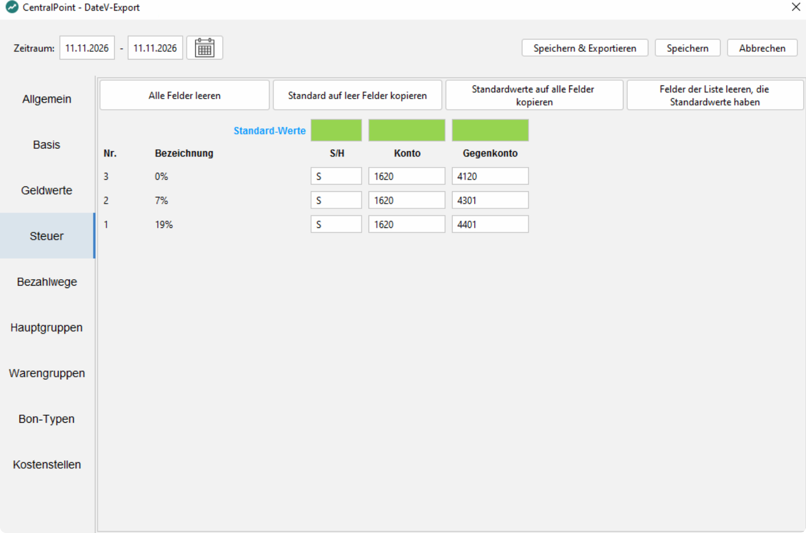
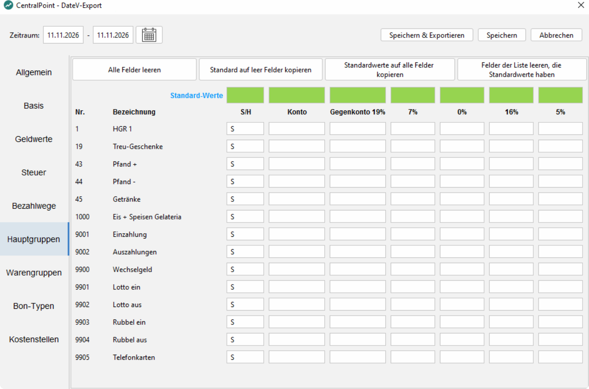
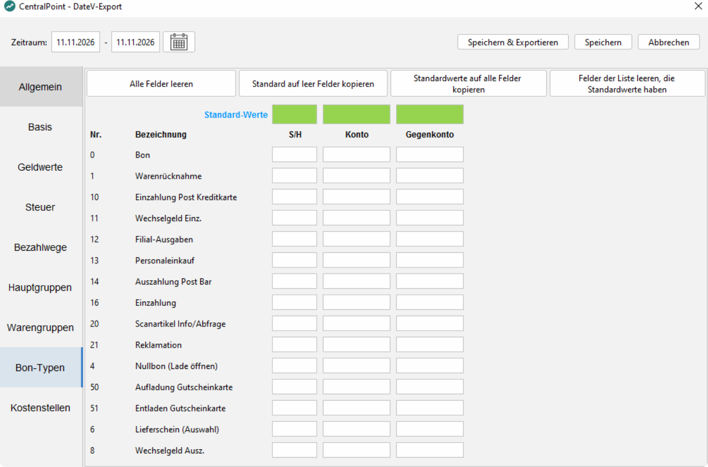

DATEV-Export einrichten
Der DATEV-Export erzeugt aus den Kassendaten eine Datei, die der Steuerberater in DATEV einliest. Standard ist ein Buchungsstapel im DATEV-EXTF-Format; alternativ gibt der Export eine Datei für DATEV Kassenbuch online aus. Diese Seite beschreibt, wie Sie die Kontierung einmalig einrichten und den Export erzeugen.
Alle Konten, Gegenkonten und Soll-/Haben-Kennzeichen stimmen Sie mit dem Steuerberater ab. Die Kasse gibt nur aus, was hier hinterlegt ist — falsche oder fehlende Kontierungen führen zu einem unbrauchbaren Buchungsstapel.
Voraussetzungen
- Der Export wird im CentralPoint unter Sonstiges → DateV-Export aufgerufen.
- Vom Steuerberater liegen vor: Kontenrahmen, Beraternummer, Mandantennummer, Sachkontenlänge, Wirtschaftsjahresbeginn, die Kontierung je Steuersatz, Bezahlweg und Warengruppe sowie die Angabe, in welchem Format er die Daten einliest (Buchungsstapel oder Kassenbuch online).
- Steuersätze, Bezahlwege, Haupt- und Warengruppen sowie Bon-Typen sind im Stamm angelegt.

So gehen Sie vor
- Öffnen Sie im CentralPoint Sonstiges → DateV-Export und setzen Sie oben im Dialog den Zeitraum von Datum – bis Datum. Der Zeitraum gilt für alle Reiter.
- Füllen Sie den Reiter Basis mit den Betriebs- und Formatangaben (siehe Tabelle unten). Die grau hinterlegten Felder sind fest vorgegeben, die weißen kommen vom Steuerberater.
- Kontieren Sie den Reiter Geldwerte: je Zeile Soll/Haben, Konto und Gegenkonto für Kassen-SOLL, Kassen-IST, Kassendifferenz, Einzahlungen, Auszahlungen, PrePaid-Ein- und -Auszahlungen sowie erhaltene und eingelöste Anzahlungen. Nicht benötigte Zeilen bleiben leer und erzeugen keine Buchungssätze. Die kombinierten Zeilen („Ein-/Auszahlungen", „PrePaid Ein-/Auszahlungen") nutzen Sie, wenn Zu- und Abgänge auf dasselbe Konto laufen sollen.
- Kontieren Sie die dynamischen Reiter Steuer, Bezahlwege, Hauptgruppen, Warengruppen und Bon-Typen. Vorgehen bei langen Listen: Standard-Werte in der obersten Zeile eintragen, mit Standardwerte auf alle Felder kopieren auf die Liste übertragen, danach die Ausnahmen einzeln pflegen.
- Wählen Sie im Reiter Allgemein unter Folgende Werte exportieren aus, welche Buchungssätze erzeugt werden: Bezahlwege, Umsatz nach Steuer, Bon-Typ-Werte, Umsatz nach Hauptwarengruppen, Umsatz nach Warengruppen, Kassenbuch-Ergänzungen. Jede zusätzliche Option setzt voraus, dass der zugehörige Reiter kontiert ist.
- Legen Sie im Reiter Allgemein das Ausgabeformat fest (siehe Ausgabeformat): Für einen Buchungsstapel lassen Sie Kassenbuch online Format deaktiviert, für DATEV Kassenbuch online aktivieren Sie die Option.
- Legen Sie im Reiter Allgemein die Ausgabe fest: Pfad und Dateiname der Ausgabedatei, Zeitstempel Dateinamen hinzufügen, Eine Datei pro Tag beziehungsweise Eine Datei pro Filiale sowie die Auswahl aller Filialen oder einer einzelnen Filiale.
- Tragen Sie unter Folgende Filialen immer ausfiltern die Filialen ein, die nicht an DATEV übergeben werden — zum Beispiel Testfilialen. Mehrere Filialen mit Komma trennen.
- Prüfen Sie bei abweichender Nummernsystematik den Reiter Kostenstellen und ordnen Sie Filialnummer und Kostenstelle einander zu. Ohne Eintrag wird die Filial- beziehungsweise Kassennummer unverändert übernommen.
- Klicken Sie auf Speichern & Exportieren.


Ausgabeformat
Die Option Kassenbuch online Format im Reiter Allgemein bestimmt den Aufbau der Datei.
| Eigenschaft | Buchungsstapel (Option aus) | Kassenbuch online (Option an) |
|---|---|---|
| Einlesen in | DATEV Rechnungswesen als Buchungsstapel | DATEV Kassenbuch online |
| Kopfzeile | beginnt mit EXTF, enthält Berater- und Mandantennummer, Wirtschaftsjahresbeginn und Sachkontenlänge aus dem Reiter Basis |
keine; die erste Zeile enthält die Spaltennamen Währung;VorzBetrag;RechNr;BelegDatum;Belegtext;UStSatz;BU;Gegenkonto;Kost1;Kost2;Kostmenge;Skonto;Nachricht |
| Konto | je Buchungssatz Konto, Gegenkonto und Soll/Haben | nur Gegenkonto; das Kassenkonto ist im Kassenbuch in DATEV festgelegt und steht nicht in der Datei |
| Betrag | Umsatz mit Soll/Haben-Kennzeichen | vorzeichenbehaftet: + = Einnahme, - = Ausgabe |
| Angaben aus dem Reiter Basis | werden ausgegeben | werden nicht ausgegeben |
Braucht der Steuerberater vollständige Buchungssätze mit Konto und Gegenkonto, deaktivieren Sie Kassenbuch online Format. Das Fehlen der Spalte „Konto" im Kassenbuch-online-Format ist kein Fehler, sondern Teil dieses Formats.
Reiter Basis
Die Angaben gelten für den Buchungsstapel. Im Format Kassenbuch online werden sie nicht in die Datei geschrieben.
| Feld | Wert |
|---|---|
| DATEV-Format | EXTF, fest |
| Version des DATEV-Formats | 510, fest |
| Datenkategorie | 21, fest |
| Formatname | Buchungsstapel, fest |
| Formatversion | 7, fest |
| Beraternummer | vom Steuerberater |
| Mandantennummer | vom Steuerberater |
| Wirtschaftsjahresbeginn | Beginn des Wirtschaftsjahres, Format JJJJMMTT |
| Sachkontenlänge | Stellenanzahl der Sachkonten, zum Beispiel 4 oder 5 |
| Bezeichnung | Bezeichnung des Buchungsstapels, optional |
| Diktatkürzel | Kürzel des Bearbeiters aus zwei Zeichen, optional |
| Buchungstyp | laut Vorgabe des Steuerberaters, zum Beispiel 1 für Finanzbuchführung, optional |
| Rechnungslegungszweck | laut Vorgabe des Steuerberaters, optional |
| Festschreibung | 0, fest |
| WKZ | EUR, fest |

Dynamische Listen
Die Reiter Steuer, Bezahlwege, Hauptgruppen, Warengruppen und Bon-Typen enthalten keine feste Auswahl: die Zeilen werden aus den Daten des Mandanten aufgebaut. Es erscheint genau das, was in dieser Installation angelegt oder verwendet wird; Nummern und Bezeichnungen unterscheiden sich von Kunde zu Kunde.
Alle diese Reiter haben denselben Aufbau: oben die Zeile Standard-Werte mit vier Schaltflächen, darunter die Liste.
| Schaltfläche | Wirkung |
|---|---|
| Alle Felder leeren | leert die komplette Liste |
| Standard auf leer Felder kopieren | füllt nur bisher leere Felder mit den Standard-Werten |
| Standardwerte auf alle Felder kopieren | überschreibt die gesamte Liste mit den Standard-Werten |
| Felder der Liste leeren, die Standardwerte haben | entfernt genau die Einträge, die dem Standard entsprechen |


Besonderheiten:
- Steuer: ein Eintrag je verwendetem Steuersatz. Soll/Haben ist üblicherweise
S. Die Zeilen kommen leer in die Liste und müssen kontiert werden. - Bezahlwege: alle Zahlungsarten des Mandanten, Soll/Haben üblicherweise
H. - Hauptgruppen und Warengruppen: je Steuersatz ein eigenes Gegenkonto, mit den Spalten Soll/Haben, Konto und Gegenkonto für 19 %, 7 %, 0 %, 16 % und 5 %. Die Spalten 16 % und 5 % stammen aus der befristeten Steuersenkung 2020 und bleiben für Altzeiträume erhalten. Erlöse lassen sich so kombiniert nach Warengruppe und Steuersatz kontieren.
- Warengruppen ergibt eine sehr lange Liste. Braucht der Steuerberater diese Detailtiefe nicht, deaktivieren Sie im Reiter Allgemein die Option „Umsatz nach Warengruppen" und exportieren nur Hauptgruppen.
- Ergänzungen: Kontierung der manuellen Kassenbuchzeilen. Wirkt nur, wenn im Reiter Allgemein die Option „Kassenbuch Ergänzungen exportieren" aktiv ist.



Neu angelegte Steuersätze, Bezahlwege, Waren- oder Hauptgruppen und Bon-Typen erscheinen ohne Konto in der Liste, und unkontierte Zeilen werden nicht exportiert. Öffnen Sie den Dialog nach Änderungen im Artikel- oder Kassenstamm erneut und ziehen Sie die Kontierung nach, sonst fehlen Umsätze im Buchungsstapel.
Nullwerte
Manche Kanzleien können keine Buchungssätze mit dem Wert 0 verarbeiten — etwa an einem Tag ohne EC-Zahlungen. Ist im Reiter Allgemein die Option Keine Null-Werte exportieren aktiv, entfallen diese Buchungssätze in der Datei.
Ergebnis prüfen
- Die Ausgabedatei liegt im angegebenen Pfad und trägt bei aktivem Zeitstempel eine eindeutige Namensendung.
- Öffnen Sie die Datei in einem Texteditor. Buchungsstapel: die erste Zeile beginnt mit
EXTFund enthält Berater- und Mandantennummer. Kassenbuch online: die erste Zeile enthält die Spaltennamen, beginnend mitWährung;VorzBetrag. - Lassen Sie den ersten Export vom Steuerberater einmalig gegenprüfen, bevor Sie den Export in den Regelbetrieb übernehmen.
Wenn es nicht funktioniert
- Spalte „Konto" fehlt, Berater- und Mandantennummer stehen nicht in der Datei: Im Reiter Allgemein ist Kassenbuch online Format aktiv. Für einen Buchungsstapel mit Konto und Gegenkonto die Option deaktivieren und neu exportieren.
- Erwartete Umsätze fehlen: Zeilen im zugehörigen dynamischen Reiter sind unkontiert oder die passende Option im Reiter Allgemein ist nicht aktiv.
- Filiale fehlt im Stapel: Prüfen Sie den Filter „Folgende Filialen immer ausfiltern" und die Auswahl „Nur Filiale".
- Falsche Kostenstelle: Reiter Kostenstellen prüfen; ohne Zuordnung wird die Filial- beziehungsweise Kassennummer unverändert übernommen.
Ein erneuter Export desselben Zeitraums erzeugt einen zweiten Buchungsstapel mit denselben Daten. Doppelte Buchungen entstehen, sobald dieser Stapel in DATEV eingelesen wird. Wählen Sie den Zeitraum bewusst und stimmen Sie eine Wiederholung mit dem Steuerberater ab, bevor Sie die Datei übergeben.
Weitere Informationen
- ITR Partner Service → Fiskalisierung → DSFinV-K exportieren
- ITR Partner Service → Fiskalisierung → Belege und Kassenabschlüsse prüfen